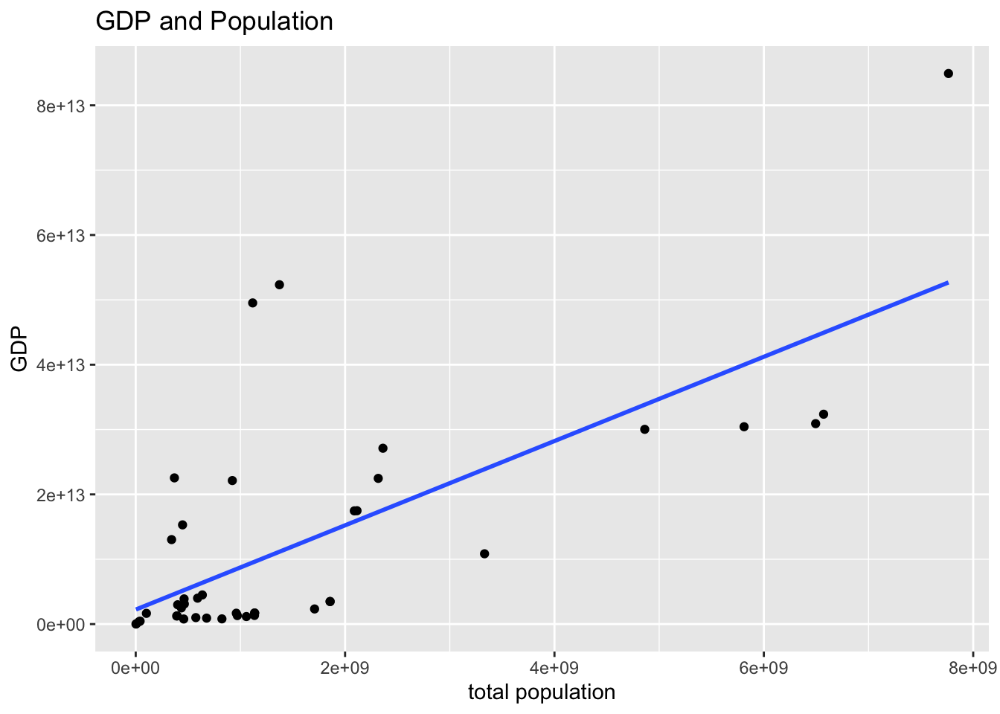
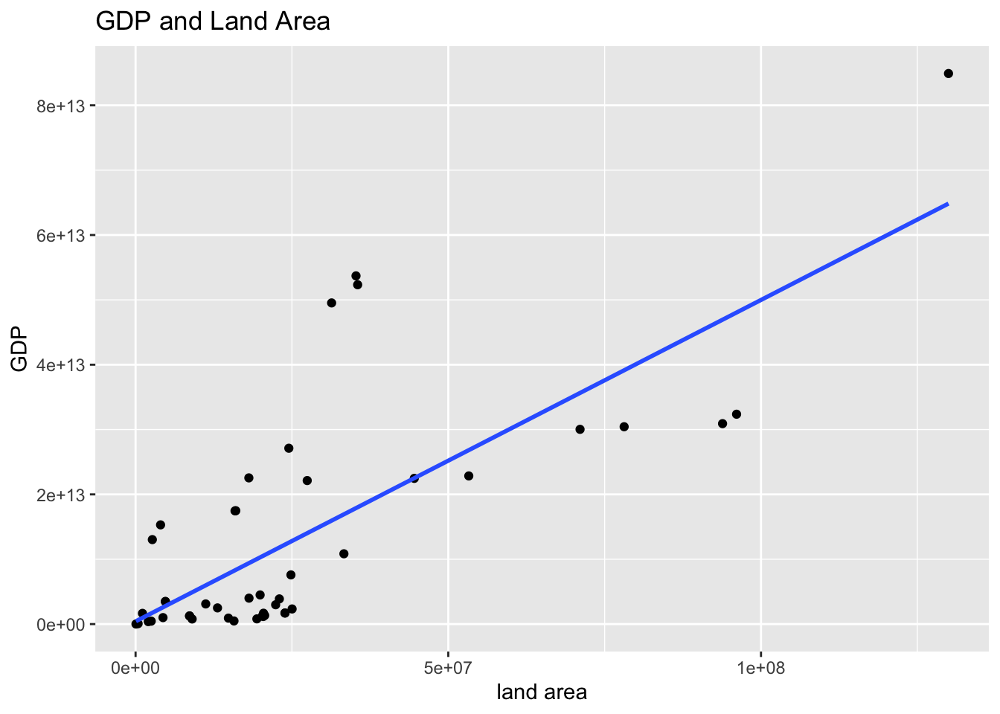
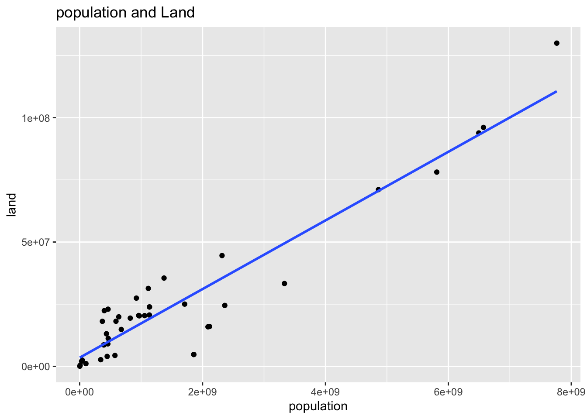

Chapter 7 Topics in Exploratory Data Analysis I
Prof. Taisei Kaizoji and R Notebook Compiled by HS
Get AGCO2rv.csv from Moodle and place it at the same place as this file.
Reference: Data Analysis for Researchers Week 7(02/02)
- Inference Statistics Regression Analysis
Summary
- Give a descriptive name to each variable, when importing data by
WDIcommand. - Save data of investigation by
write_csv, but if you have RNotebook, you do not need to save at every step. - If you use pipe in
tidyverse, i.e, %>%, properly, you do not need toattach(data)ordettach(data).
Dot Place Holder in lm.
In the following, the following format is used.
df %>% lm(y ~ x, .)This is same as
lm(y ~ x, data = df)‘.’ is called the dot place holder. Recall that most of the function (or command) we use in tidyverse, the first argument is the data frame. When we use piping, we omit the first argiment. For example,
df %>% ggplot(aes(x, y)) + geom_point()is same as
ggplot(df, aes(x,y)) + geom_point()However, the data frame argument of lm() is not the first one, therefore we use the dot place holder to show the place the data frame should be inserted.
7.1 Part I: Regression 1:
Run the following only once, or you can install these packages using install packages in the Tool menu.
install.packages("car")
install.packages("modelsummary")7.1.1 Why does GDP vary from country to country?
library(tidyverse) # tidyverse Package, a collection of packages for data science
library(WDI) # WDI Package for World Development Indicators
library(car) #VIF Tool for checking multi-collinearity## Loading required package: carData##
## Attaching package: 'car'## The following object is masked from 'package:dplyr':
##
## recode## The following object is masked from 'package:purrr':
##
## somelibrary(modelsummary) # Tool for writting tables of the regression results- WDI Indicators
- NY.GDP.MKTP.CD: GDP (current US$)
- SP.POP.TOTL: Population, total
- AG.LND.TOTL.K2: Land area (sq. km)
wb <- as_tibble(WDI(country="all",
indicator=c(gdp = "NY.GDP.MKTP.CD", pop = "SP.POP.TOTL", land = "AG.LND.TOTL.K2"),
start=1960, end=2020,
extra=TRUE))
wb## # A tibble: 16,226 × 15
## iso2c country year status lastupda…¹ gdp pop land iso3c region
## <chr> <chr> <int> <chr> <chr> <dbl> <dbl> <dbl> <chr> <chr>
## 1 1A Arab World 1963 "" 2022-09-16 NA 1.00e8 1.36e7 ARB Aggre…
## 2 1A Arab World 1960 "" 2022-09-16 NA 9.22e7 NA ARB Aggre…
## 3 1A Arab World 1971 "" 2022-09-16 4.98e10 1.25e8 1.36e7 ARB Aggre…
## 4 1A Arab World 1972 "" 2022-09-16 5.94e10 1.29e8 1.36e7 ARB Aggre…
## 5 1A Arab World 1961 "" 2022-09-16 NA 9.47e7 1.36e7 ARB Aggre…
## 6 1A Arab World 1962 "" 2022-09-16 NA 9.73e7 1.36e7 ARB Aggre…
## 7 1A Arab World 1975 "" 2022-09-16 1.58e11 1.40e8 1.36e7 ARB Aggre…
## 8 1A Arab World 1976 "" 2022-09-16 1.97e11 1.44e8 1.36e7 ARB Aggre…
## 9 1A Arab World 1973 "" 2022-09-16 7.53e10 1.32e8 1.36e7 ARB Aggre…
## 10 1A Arab World 1974 "" 2022-09-16 1.43e11 1.36e8 1.36e7 ARB Aggre…
## # … with 16,216 more rows, 5 more variables: capital <chr>, longitude <chr>,
## # latitude <chr>, income <chr>, lending <chr>, and abbreviated variable name
## # ¹lastupdatedwb_ag20 <- wb %>% filter(year == 2020 & region=="Aggregates")
wb_ag20## # A tibble: 47 × 15
## iso2c country year status lastu…¹ gdp pop land iso3c region capital
## <chr> <chr> <int> <chr> <chr> <dbl> <dbl> <dbl> <chr> <chr> <chr>
## 1 1A Arab W… 2020 "" 2022-0… 2.50e12 4.36e8 1.31e7 ARB Aggre… ""
## 2 1W World 2020 "" 2022-0… 8.49e13 7.76e9 1.30e8 WLD Aggre… ""
## 3 4E East A… 2020 "" 2022-0… 1.75e13 2.11e9 1.60e7 EAP Aggre… ""
## 4 7E Europe… 2020 "" 2022-0… 2.98e12 4.01e8 2.24e7 ECA Aggre… ""
## 5 8S South … 2020 "" 2022-0… 3.48e12 1.86e9 4.77e6 SAS Aggre… ""
## 6 B8 Centra… 2020 "" 2022-0… 1.65e12 1.02e8 1.11e6 CEB Aggre… ""
## 7 EU Europe… 2020 "" 2022-0… 1.53e13 4.47e8 4.00e6 EUU Aggre… ""
## 8 F1 Fragil… 2020 "" 2022-0… 1.68e12 9.61e8 2.05e7 FCS Aggre… ""
## 9 OE OECD m… 2020 "" 2022-0… 5.23e13 1.37e9 3.55e7 OED Aggre… ""
## 10 S1 Small … 2020 "" 2022-0… 4.52e11 4.19e7 2.50e6 SST Aggre… ""
## # … with 37 more rows, 4 more variables: longitude <chr>, latitude <chr>,
## # income <chr>, lending <chr>, and abbreviated variable name ¹lastupdated7.1.2 Regression
wb_ag20 %>% ggplot(aes(pop, gdp)) +
geom_point() +
geom_smooth(method = "lm", se = FALSE) +
labs(title = "GDP and Population",
x = "total population", y = "GDP")## `geom_smooth()` using formula 'y ~ x'## Warning: Removed 1 rows containing non-finite values (stat_smooth).## Warning: Removed 1 rows containing missing values (geom_point).
gdp_pop <-wb_ag20 %>% lm(gdp ~ pop, .)
summary(gdp_pop)##
## Call:
## lm(formula = gdp ~ pop, data = .)
##
## Residuals:
## Min 1Q Median 3Q Max
## -1.640e+13 -8.406e+12 -3.262e+12 1.173e+12 4.277e+13
##
## Coefficients:
## Estimate Std. Error t value Pr(>|t|)
## (Intercept) 3.137e+12 2.776e+12 1.13 0.265
## pop 6.281e+03 1.130e+03 5.56 1.49e-06 ***
## ---
## Signif. codes: 0 '***' 0.001 '**' 0.01 '*' 0.05 '.' 0.1 ' ' 1
##
## Residual standard error: 1.418e+13 on 44 degrees of freedom
## (1 observation deleted due to missingness)
## Multiple R-squared: 0.4127, Adjusted R-squared: 0.3993
## F-statistic: 30.91 on 1 and 44 DF, p-value: 1.489e-06wb_ag20 %>% ggplot(aes(land, gdp)) +
geom_point() +
geom_smooth(method = "lm", se = FALSE) +
labs(title = "GDP and Land Area",
x = "land area", y = "GDP")## `geom_smooth()` using formula 'y ~ x'## Warning: Removed 1 rows containing non-finite values (stat_smooth).## Warning: Removed 1 rows containing missing values (geom_point).
gdp_land <-wb_ag20 %>% lm(gdp ~ land, .)
summary(gdp_land)##
## Call:
## lm(formula = gdp ~ land, data = .)
##
## Residuals:
## Min 1Q Median 3Q Max
## -1.602e+13 -8.384e+12 -3.710e+12 7.025e+11 3.581e+13
##
## Coefficients:
## Estimate Std. Error t value Pr(>|t|)
## (Intercept) 4.155e+11 2.522e+12 0.165 0.87
## land 4.957e+05 6.709e+04 7.389 3.09e-09 ***
## ---
## Signif. codes: 0 '***' 0.001 '**' 0.01 '*' 0.05 '.' 0.1 ' ' 1
##
## Residual standard error: 1.236e+13 on 44 degrees of freedom
## (1 observation deleted due to missingness)
## Multiple R-squared: 0.5537, Adjusted R-squared: 0.5436
## F-statistic: 54.59 on 1 and 44 DF, p-value: 3.093e-09gdp_pop_and_land <-wb_ag20 %>% lm(gdp ~ pop + land, .)
summary(gdp_pop_and_land)##
## Call:
## lm(formula = gdp ~ pop + land, data = .)
##
## Residuals:
## Min 1Q Median 3Q Max
## -1.418e+13 -9.476e+12 -3.687e+12 5.531e+12 3.287e+13
##
## Coefficients:
## Estimate Std. Error t value Pr(>|t|)
## (Intercept) 3.556e+11 2.510e+12 0.142 0.888013
## pop -3.064e+03 2.571e+03 -1.192 0.239891
## land 6.887e+05 1.752e+05 3.932 0.000302 ***
## ---
## Signif. codes: 0 '***' 0.001 '**' 0.01 '*' 0.05 '.' 0.1 ' ' 1
##
## Residual standard error: 1.231e+13 on 43 degrees of freedom
## (1 observation deleted due to missingness)
## Multiple R-squared: 0.568, Adjusted R-squared: 0.5479
## F-statistic: 28.27 on 2 and 43 DF, p-value: 1.457e-08gpa_models <- list(gdp_pop = gdp_pop, gdp_land = gdp_land, gdp_pop_and_land = gdp_pop_and_land)
msummary(gpa_models, statistic = 'p.value')| gdp_pop | gdp_land | gdp_pop_and_land | |
|---|---|---|---|
| (Intercept) | 3.137175e+12 | 4.154638e+11 | 3.555899e+11 |
| (0.265) | (0.870) | (0.888) | |
| pop | 6.281004e+03 | −3.063852e+03 | |
| (0.000) | (0.240) | ||
| land | 4.956974e+05 | 6.886771e+05 | |
| (0.000) | (0.000) | ||
| Num.Obs. | 46 | 46 | 46 |
| R2 | 0.413 | 0.554 | 0.568 |
| R2 Adj. | 0.399 | 0.544 | 0.548 |
| AIC | 2920.5 | 2907.9 | 2908.4 |
| BIC | 2926.0 | 2913.4 | 2915.7 |
| Log.Lik. | −1457.275 | −1450.958 | −1450.211 |
| RMSE | 1.387274e+13 | 1.209279e+13 | 1.189789e+13 |
- The default is:
msummary(gpa_models).msummary(gpa_models, statistic = 'p.value')replaces the standard error by p-value. Compare the following with the one above and theStd.Errorof the summaries of each model.
msummary(gpa_models)| gdp_pop | gdp_land | gdp_pop_and_land | |
|---|---|---|---|
| (Intercept) | 3.137175e+12 | 4.154638e+11 | 3.555899e+11 |
| (2.776134e+12) | (2.521673e+12) | (2.510218e+12) | |
| pop | 6.281004e+03 | −3.063852e+03 | |
| (1.129663e+03) | (2.570859e+03) | ||
| land | 4.956974e+05 | 6.886771e+05 | |
| (6.708982e+04) | (1.751547e+05) | ||
| Num.Obs. | 46 | 46 | 46 |
| R2 | 0.413 | 0.554 | 0.568 |
| R2 Adj. | 0.399 | 0.544 | 0.548 |
| AIC | 2920.5 | 2907.9 | 2908.4 |
| BIC | 2926.0 | 2913.4 | 2915.7 |
| Log.Lik. | −1457.275 | −1450.958 | −1450.211 |
| RMSE | 1.387274e+13 | 1.209279e+13 | 1.189789e+13 |
wb_ag20 %>% ggplot(aes(pop, land)) +
geom_point() +
geom_smooth(method = "lm", se = FALSE) +
labs(title = "population and Land",
x = "population", y = "land")## `geom_smooth()` using formula 'y ~ x'## Warning: Removed 1 rows containing non-finite values (stat_smooth).## Warning: Removed 1 rows containing missing values (geom_point).
7.1.3 Checking for multicollinearity
pop_land <-wb_ag20 %>% lm(pop ~ land, .)
summary(pop_land)##
## Call:
## lm(formula = pop ~ land, data = .)
##
## Residuals:
## Min 1Q Median 3Q Max
## -990229492 -397218543 -139396054 291973997 1773586764
##
## Coefficients:
## Estimate Std. Error t value Pr(>|t|)
## (Intercept) -1.954e+07 1.472e+08 -0.133 0.895
## land 6.299e+01 3.916e+00 16.086 <2e-16 ***
## ---
## Signif. codes: 0 '***' 0.001 '**' 0.01 '*' 0.05 '.' 0.1 ' ' 1
##
## Residual standard error: 721600000 on 44 degrees of freedom
## (1 observation deleted due to missingness)
## Multiple R-squared: 0.8547, Adjusted R-squared: 0.8514
## F-statistic: 258.8 on 1 and 44 DF, p-value: < 2.2e-167.1.4 vif: Determination of multi-collinearity
VIF = 1/(1-{Ri}2)
7.1.4.2 Conclusion
- Regions which have large population have large GDP.
- It was also found that the larger the region, the more populated the region. This suggests that the GPs of regions with large regions and large populations are significant.
- This result suggests a positive relationship between population and economic activity.
7.2 A time series data of World from 1960 to 2020
wb_world <- wb %>% filter(country=="World") %>% arrange(year)
wb_world## # A tibble: 61 × 15
## iso2c country year status lastupdated gdp pop land iso3c region
## <chr> <chr> <int> <chr> <chr> <dbl> <dbl> <dbl> <chr> <chr>
## 1 1W World 1960 "" 2022-09-16 1.39e12 3.03e9 NA WLD Aggre…
## 2 1W World 1961 "" 2022-09-16 1.45e12 3.07e9 1.30e8 WLD Aggre…
## 3 1W World 1962 "" 2022-09-16 1.55e12 3.12e9 1.30e8 WLD Aggre…
## 4 1W World 1963 "" 2022-09-16 1.67e12 3.19e9 1.30e8 WLD Aggre…
## 5 1W World 1964 "" 2022-09-16 1.83e12 3.26e9 1.30e8 WLD Aggre…
## 6 1W World 1965 "" 2022-09-16 1.99e12 3.32e9 1.30e8 WLD Aggre…
## 7 1W World 1966 "" 2022-09-16 2.16e12 3.39e9 1.30e8 WLD Aggre…
## 8 1W World 1967 "" 2022-09-16 2.30e12 3.46e9 1.30e8 WLD Aggre…
## 9 1W World 1968 "" 2022-09-16 2.48e12 3.53e9 1.30e8 WLD Aggre…
## 10 1W World 1969 "" 2022-09-16 2.74e12 3.61e9 1.30e8 WLD Aggre…
## # … with 51 more rows, and 5 more variables: capital <chr>, longitude <chr>,
## # latitude <chr>, income <chr>, lending <chr>wb_world %>% ggplot() +
geom_line(aes(x = year, y = gdp)) +
labs(title = "GDP (current US$)")
wb_world %>% ggplot() +
geom_line(aes(x = year, y = pop)) +
labs(title = "Total population)")
wb_world %>% lm(gdp ~ pop, .) %>% summary()##
## Call:
## lm(formula = gdp ~ pop, data = .)
##
## Residuals:
## Min 1Q Median 3Q Max
## -1.334e+13 -7.513e+12 -1.944e+12 6.913e+12 1.350e+13
##
## Coefficients:
## Estimate Std. Error t value Pr(>|t|)
## (Intercept) -6.857e+13 4.151e+12 -16.52 <2e-16 ***
## pop 1.862e+04 7.563e+02 24.63 <2e-16 ***
## ---
## Signif. codes: 0 '***' 0.001 '**' 0.01 '*' 0.05 '.' 0.1 ' ' 1
##
## Residual standard error: 8.396e+12 on 59 degrees of freedom
## Multiple R-squared: 0.9113, Adjusted R-squared: 0.9098
## F-statistic: 606.4 on 1 and 59 DF, p-value: < 2.2e-16wb_world %>% ggplot() +
geom_point(aes(pop, gdp)) +
labs(title = "World GDP and World population",
x = "Total population", y = "GDP (current US$)")
wb_world_extra <- wb_world %>% mutate(diff_gdp = gdp - lag(gdp), diff_pop = pop - lag(pop))
wb_world_extra## # A tibble: 61 × 17
## iso2c country year status lastupdated gdp pop land iso3c region
## <chr> <chr> <int> <chr> <chr> <dbl> <dbl> <dbl> <chr> <chr>
## 1 1W World 1960 "" 2022-09-16 1.39e12 3.03e9 NA WLD Aggre…
## 2 1W World 1961 "" 2022-09-16 1.45e12 3.07e9 1.30e8 WLD Aggre…
## 3 1W World 1962 "" 2022-09-16 1.55e12 3.12e9 1.30e8 WLD Aggre…
## 4 1W World 1963 "" 2022-09-16 1.67e12 3.19e9 1.30e8 WLD Aggre…
## 5 1W World 1964 "" 2022-09-16 1.83e12 3.26e9 1.30e8 WLD Aggre…
## 6 1W World 1965 "" 2022-09-16 1.99e12 3.32e9 1.30e8 WLD Aggre…
## 7 1W World 1966 "" 2022-09-16 2.16e12 3.39e9 1.30e8 WLD Aggre…
## 8 1W World 1967 "" 2022-09-16 2.30e12 3.46e9 1.30e8 WLD Aggre…
## 9 1W World 1968 "" 2022-09-16 2.48e12 3.53e9 1.30e8 WLD Aggre…
## 10 1W World 1969 "" 2022-09-16 2.74e12 3.61e9 1.30e8 WLD Aggre…
## # … with 51 more rows, and 7 more variables: capital <chr>, longitude <chr>,
## # latitude <chr>, income <chr>, lending <chr>, diff_gdp <dbl>, diff_pop <dbl>wb_world_extra %>% ggplot(aes(x = year, y = diff_gdp)) + geom_line() +
labs(title = "World GDP changes", y = "gdp changes")## Warning: Removed 1 row(s) containing missing values (geom_path).
wb_world_extra %>% ggplot(aes(x = year, y = diff_pop)) + geom_line() +
labs(title = "World population changes", y = "population changes")## Warning: Removed 1 row(s) containing missing values (geom_path).
wb_world_extra %>% ggplot(aes(x = diff_pop, y = diff_gdp)) + geom_point() +
geom_smooth(method = "lm", se = FALSE) +
labs(title = "World GDP changes and World GDP changes", x = "population changes", y = "GDP changes") ## `geom_smooth()` using formula 'y ~ x'## Warning: Removed 1 rows containing non-finite values (stat_smooth).## Warning: Removed 1 rows containing missing values (geom_point).
wb_world_extra %>% lm(diff_gdp ~ diff_pop, .) %>% summary()##
## Call:
## lm(formula = diff_gdp ~ diff_pop, data = .)
##
## Residuals:
## Min 1Q Median 3Q Max
## -6.350e+12 -9.506e+11 -3.699e+11 3.100e+11 5.679e+12
##
## Coefficients:
## Estimate Std. Error t value Pr(>|t|)
## (Intercept) -3.460e+12 2.553e+12 -1.355 0.1806
## diff_pop 6.152e+04 3.219e+04 1.911 0.0609 .
## ---
## Signif. codes: 0 '***' 0.001 '**' 0.01 '*' 0.05 '.' 0.1 ' ' 1
##
## Residual standard error: 2.114e+12 on 58 degrees of freedom
## (1 observation deleted due to missingness)
## Multiple R-squared: 0.05925, Adjusted R-squared: 0.04303
## F-statistic: 3.653 on 1 and 58 DF, p-value: 0.06092